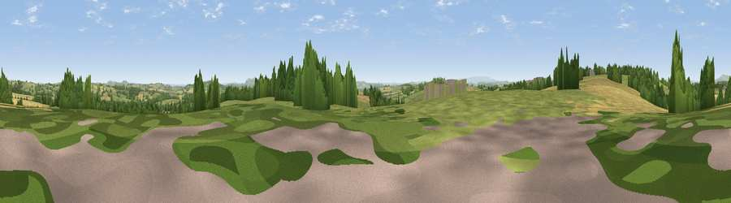

Viewpoint near Bredenbury
#20686 in England · top 57% of its area beats it · near BredenburyThe view, rendered

A 360° render of this exact spot computed from the terrain model, tree cover and land cover — summer colours, afternoon light, calibrated against photographs of famous viewpoints. Real trees, hedges and buildings will differ in detail.
The panorama
Grey silhouette: terrain skyline in each direction (720 bearings, Earth curvature and refraction included). Dashed green: skyline with trees (+15 m) and buildings (+8 m) as obstacles. Blue strip: how far the ground is visible on each bearing.
Where the view opens
Wedge length = distance to the farthest visible ground on that bearing (vegetation-aware). Rings at 10, 25 and 50 km.
What fills the view
54% grassland · 28% cropland · 17% woodland · 1% built-up
Angular shares of the visible panorama (visual magnitude), not map area. Landscape diversity 0.45 (0–1 Shannon).
Key numbers
More beautiful places nearby
The staircase of upgrades: each row has a higher view potential than everything closer. Driving times are estimates from straight-line distance, calibrated against real road routing — check an actual route before setting out.
| Place | Direction | Drive | Score |
|---|---|---|---|
| Viewpoint near Bredenbury | W · 2 km | ~6 min | 59.3 |
| Viewpoint near Pudleston | W · 3 km | ~8 min | 64.6 |
| Viewpoint near Pencombe | SW · 4 km | ~9 min | 72.8 |
| Viewpoint near Martley | E · 14 km | ~25 min | 78.1 |
| Woodbury Hill | ENE · 16 km | ~28 min | 81.6 |
| Viewpoint near Great Witley | ENE · 16 km | ~28 min | 83.4 |
| North Hill | ESE · 19 km | ~33 min | 86.8 |
| Worcestershire Beacon | SE · 20 km | ~34 min | 87.1 |
52.20779, -2.57617 · source: screening · position refined by local search. Computed location — check access rights before visiting.